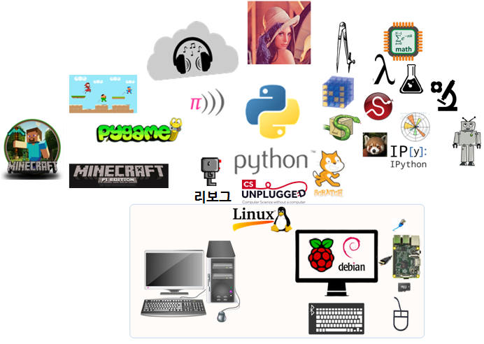
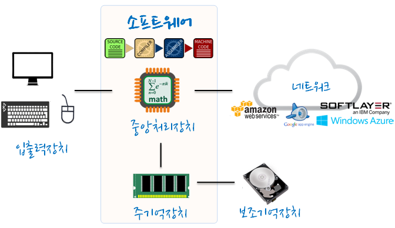

R 파이썬 소프트레이어 클라우드, xwMOOC
라즈베리 파이 파이썬 프로그래밍
학습 목표
- 프로그램에 대한 정의 및 의미
- 컴퓨터와 대화하는 방식
- 라즈베리 파이 내장된 파이썬 언어
- 프로그램을 통한 컴퓨터와 의사소통
- 라즈베리 파이에 파이썬을 활용한 현실 및 가상세계 프로그래밍

- 온라인 3D 레고 : 마인크래프트 파이(Minecraft-Pi)
- 소리 : 소닉 파이 (Sonic-Pi)
- 게임 : 파이게임(Pygame)
- 과학기술 : 넘파이(NumPy), 사이파이(SciPy), 판다스(Pandas), 심파이(SymPy), 아이파이썬(IPython)
라즈베리 파이 하드웨어 컴퓨터에 파이썬 언어로 프로그래밍을 통해서 숫자, 문자, 소리, 가상세계, 과학기술을 통한 유전자, 화학, 물리, 지구과학 등, 그리고 로봇을 이용한 현실세계를 프로그래밍할 수 있다.
1. 프로그래머가 바라보는 컴퓨터 하드웨어
- 중앙처리장치(Central Processing Unit, CPU): 다음 무엇을 할까요? (“What is next?”) 명령어를 처리하는 컴퓨터의 주요 부분이다. 만약 컴퓨터 중앙처리장치가 3.0 GHz 라면, 초당 명령어 (다음 무엇을 할까요? What is next?)를 삼백만번 처리할 수 있다는 것이다. CPU 처리속도를 따라서 빠르게 컴퓨터와 어떻게 대화하는지 학습할 것이다.
- 주기억장치(Main Memory): 주기억장치는 중앙처리장치(CPU)가 급하게 명령어를 처리하기 하는데 필요한 정보를 저장하는 용도로 사용된다. 주기억장치는 중앙처리장치만큼이나 빠르다. 그러나 주기억장치에 저장된 정보는 컴퓨터가 꺼지면 자동으로 지워진다.
- 보조 기억장치(Secondary Memory): 정보를 저장하기 위해 사용되지만, 주기억장치보다 속도는 느리다. 전기가 나갔을 때도 정보를 기억하는 것은 장점이다. 휴대용 USB나 휴대용 MP3 플레이어에 사용되는 USB 플래쉬 메모리나 디스크 드라이브가 여기에 속한다.
- 입출력장치(Input Output Devices): 간단하게 화면, 키보드, 마우스, 마이크, 스피커, 터치패드가 포함된다. 컴퓨터와 사람이 상호작용하는 모든 방식이 포함된다.
- 네트워크(Network): 요즘 거의 모든 컴퓨터는 네트워크로 정보를 주고 받는 네트워크 연결(Network Connection) 하드웨어가 있다. 네트워크는 항상 “이용가능” 하지 않을지도 모르는 데이터를 저장하고 가져오는 매우 느린 저장소로 볼 수 있다. 그러한 점에서 네트워크는 좀더 느리고, 때때로 신뢰성이 떨어지는 보조 기억장치(Secondary Memory)의 한 형태로 볼 수 있다.

2. 프로그래머가 되기 위해서 필요한 것 두 가지.
프로그래머는 컴퓨터가 “다음 무엇을 수행할까요?”에 대한 답을 하는 사람이기도 하다. 하지만, 컴퓨터 질문에 대답하기 위해서 프로그래머를 축소해서 5mm 크기 컴퓨터에 집어넣고 초당 30억개 명령어로 답을 하게 만드는 것은 매우 불편하다. 그래서, 대신에 미리 컴퓨터에게 수행할 명령문을 작성해야 한다. 이렇게 미리 작성된 명령문 집합을 프로그램(Program)이라고 하며, 명령어 집합을 작성하고 명령어 집합이 올바르게 작성될 수 있도록 하는 행위를 프로그래밍(Programming)이라고 부른다.
프로그래머가 되기 위해서 두 가지 기술이 필요하다.
- 첫째, 파이썬같은 프로그래밍 언어 - 어휘와 문법을 알 필요가 있다. 단어를 새로운 언어에 맞추어 작성할 수 있어야 하며 새로운 언어로 잘 표현된 문장으로 어떻게 작성하는지도 알아야 한다.
- 둘째, 스토리(Story)를 말할 수 있어야 한다. 스토리를 작성할 때, 독자에게 아이디어(idea)를 전달하기 위해서 단어와 문장을 조합합니다. 스토리를 구성할 때 기술적인 면과 예술적인 면이 있는데, 기술적인 면은 쓰기 연습을 반복하고, 피트백을 받아 향상된다. 프로그래밍에서, 우리가 작성하는 프로그램은 “스토리”가 되고, 해결하려고 하는 문제는 “아이디어”에 해당된다.
3. 파이썬과 대화하기
파이썬과 대화를 시작하기 전에, 파이썬 소프트웨어를 컴퓨터에 설치하고 파이썬을 컴퓨터에서 어떻게 실행하는지를 학습해야 한다. 이번 장에서 다루기에는 너무 구체적이고 자세한 사항이기 때문에 http://www.pythonlearn.com을 참조하는 것을 권한다. 윈도우와 매킨토쉬 시스템 상에서 설치하고 실행하는 방법을 자세한 설치절차와 함께 화면을 캡쳐하여 설명하였다. 설치가 마무리되고 터미널이나 윈도우 명령어 실행창에서 python을 타이핑 하게 되면, 파이썬 인터프리터가 인터랙티브 모드로 실행을 시작하고 다음과 같은 것이 화면에 뿌려진다.
Python 2.6.1 (r261:67515, Jun 24 2010, 21:47:49)
[GCC 4.2.1 (Apple Inc. build 5646)] on darwin
Type "help", "copyright", "credits" or "license" for more information.
>>> 파이썬 인터프리터는 >>> 프롬프트를 통해서 여러분에게 요청사항(“다음에 파이썬이 무엇을 실행하기를 원합니까?”)을 접수받는 방식을 취한다. 파이썬은 여러분과 대화를 나눌 준비가 되었다. 이제 남은 것은 파이썬 언어로 어떻게 말하고 어떻게 파이썬과 대화하는지 아는 것이다.
4. 전문용어: 인터프리터와 컴파일러
파이썬은 상대적으로 직접 사람이 읽고 쓸 수도 있고, 컴퓨터도 읽고 처리할 수 있도록 고안된 하이 레벨(High-level) 언어이다. 다른 하이 레벨 언어에는 자바, C++, PHP, 루비, 베이직, 펄, 자바스크립트 등 다수가 포함되어 있다. 실제 하드웨어 중앙처리장치(CPU)내에서는 하이레벨 언어를 조금도 이해하지 못한다.
중앙처리장치는 우리가 기계어(machine-language)로 부르는 언어만 이해한다. 기계어는 매우 간단하고 솔직히 작성하기에는 매우 귀찮다. 왜냐하면 모두 0과 1로만 표현되기 때문이다.
01010001110100100101010000001111
11100110000011101010010101101101
...표면적으로 0과 1로만 되어 있기 때문에 기계어가 간단해 보이지만, 구문은 매우 복잡하고 파이썬보다 훨씬 어렵다. 그래서 매우 소수의 프로그래머만이 기계어로 작성할 수 있다. 대신에, 프로그래머가 파이썬과 자바스크립트 같은 하이 레벨 언어로 작성할 수 있게 다양한 번역기(translator)를 만들었다.
이러한 번역기는 프로그램을 중앙처리장치에 의해서 실제 실행이 가능한 기계어로 변환한다.
기계어는 특정 컴퓨터 하드웨어에 묶여있기 때문에 기계어는 다른 형식의 하드웨어에는 이식(portable)되지 않는다. 하이 레벨 언어로 작성된 프로그램은 두 가지 방식으로 이기종의 컴퓨터로 이식이 가능하다. 한 방법은 새로운 하드웨어에 맞게 기계어를 재컴파일(recompile)하는 것이고, 다른 방법은 새로운 하드웨어에 맞는 다른 인터프리터를 이용하는 것이다.
프로그래밍 언어 번역기는 일반적으로 두가지 범주가 있다. 1. 인터프리터(interpreter) 1. 컴파일러(Compiler)
인터프리터는 프로그래머가 코드를 작성할 때 소스 코드를 읽고, 소스코드를 파싱하고, 즉석에서 명령을 해석한다. 파이썬은 인터프리터다. 따라서, 파이썬을 인터렉트브 모드로 실행할 때, 파이썬 명령문(한 문장)을 작성하면, 파이썬이 즉석에서 처리하고, 사용자가 다른 파이썬 명령어를 입력하도록 준비를 한다.
파이썬 코드의 일부는 나중에 사용될 것이니 파이썬에게 기억하도록 명령한다. 적당한 이름을 골라서 값을 기억시키고, 나중에 그 이름을 호출하여 값을 사용한다. 이러한 목적으로 저장된 값을 참조하는 목적으로 사용되는 표식(label)을 변수(variable)라고 한다.
>>> x = 6
>>> print x
6
>>> y = x * 7
>>> print y
42
>>> 상기 예제에서 파이썬이 값 6 을 기억하고 있다가, 라벨 x를 사용하여 나중에 값을 가져오게 만들었다. print 예약어를 사용하여 파이썬이 잘 기억하고 있는지를 검증한다. 그리고 x를 가져와서 7을 곱하고 새로운 변수 y에 값을 집어 넣는다. 그리고 y에 현재 무슨 값이 저장되었는지 출력하라고 파이썬에게 지시한다.
한줄 한줄 파이썬에 명령어를 입력하고 있지만, 앞쪽 명령문에서 생성된 자료가 뒤쪽 실행 명령문에서 사용될 수 있도록 파이썬은 순차적으로 정렬된 문장으로 처리한다. 방금전 논리적이고 의미있는 순서로 4줄 명령문을 간단하게 한 단락으로 작성했다.
위에서 본 것처럼 파이썬과 인터랙티브하게 대화를 주고받는 것이 인터프리터의 본질이다. 컴파일러가 동작하기 위해서는 먼저 완전한 프로그램을 파일 하나에 담고, 하이 레벨 소스코드를 기계어로 번역하는 과정을 거치고, 마지막으로 나중에 실행되도록 변환된 기계어를 파일에 담는다.
윈도우를 사용한다면, 실행가능한 기계어 프로그램 확장자가 “.exe”(executable), 혹은 “.dll”(dynamically loadable library)임을 확인할 수 있다. 리눅스와 매킨토쉬에는 실행파일을 의미하는 특정 확장자는 없다.
텍스트 편집기에서 실행파일을 열게 되면, 다음과 같이 읽을 수 없는 좀 괴상한 출력결과를 화면상에서 확인한다.
^?ELF^A^A^A^@^@^@^@^@^@^@^@^@^B^@^C^@^A^@^@^@\xa0\x82
^D^H4^@^@^@\x90^]^@^@^@^@^@^@4^@ ^@^G^@(^@$^@!^@^F^@
^@^@4^@^@^@4\x80^D^H4\x80^D^H\xe0^@^@^@\xe0^@^@^@^E
^@^@^@^D^@^@^@^C^@^@^@^T^A^@^@^T\x81^D^H^T\x81^D^H^S
^@^@^@^S^@^@^@^D^@^@^@^A^@^@^@^A\^D^HQVhT\x83^D^H\xe8
....기계어를 읽고 쓰는 것은 쉽지 않다. 그래서 C 나 파이썬 같은 하이 레벨 언어로 작성된 프로그램을 기계어로 자동 번역해주는 인터프리터와 컴파일러가 있다는 것은 멋진 일이다.
컴파일러와, 인터프리터를 논의하는 이 시점에, 파이썬 인터프리터 자체에 대해서 약간 궁금해야 한다. 무슨 언어로 작성되었을까? 컴파일된 언어로 작성되었을까? python을 타이핑하게 될 때, 정확하게 무슨 일이 일어나는걸까?
파이썬 인터프리터는 하이 레벨 언어 C로 작성되었다. 파이썬 인터프리터 실제 소스 코드를 보려면, www.python.org 웹사이트에 가서 여러분의 방식으로 개발할 수 있는 소스코드를 확인할 수 있다. 그래서, 파이썬 그 자체는 프로그램이다. 기계어로 컴파일되어 있어서 파이썬을 여러분의 컴퓨터에 설치(혹은 컴퓨터 제조자가 설치를 대신 해주기도 함)한다는 것은 번역된 파이썬 프로그램 기계어 코드 사본을 여러분 컴퓨터에 복사하는 것에 불과하다. 윈도우 시스템에서 파이썬 실행가능한 기계어 코드는 파일에 다음과 같은 이름을 갖는다.
C:\Python27\python.exe5. 프로그램 작성하기
파이썬 인터프리터에 명령어를 타이핑 하는 것은 파이썬 주요 기능을 알아보는 좋은 방법이지만, 좀더 복잡한 문제를 해결하는데 권하지는 않는다.
프로그램을 작성할 때, 텍스트 편집기를 사용해서 스크립트(script)로 불리는 파일에 명령어 집합을 작성한다. 관례로, 파이썬 스크립트 확장자는 .py가 된다.
스크립트를 실행하기 위해서, 파이썬 인터프리터에 파일 이름을 넘겨준다. 유니스나 윈도우 명령창에서 python hello.py를 입력하게 되면 다음과 같은 결과를 얻는다.
csev$ cat hello.py
print 'Hello world!'
csev$ python hello.py
Hello world!
csev$csev\$은 운영시스템 명령어 프롬프트이고, cat hello.py는 문자열을 출력하는 한줄 파이썬 프로그램을 담고 있는 hello.py 파일을 화면에 출력하라는 명령어입니다.
인터랙트브 모드에서 파이썬 코드 입력하는 방식 대신에 파이썬 인터프리터를 호출해서 hello.py 파일로부터 소스코드를 읽도록 지시합니다.
이 새로운 방식은 파이썬 프로그램을 끝마치기 위해 quit()를 사용할 필요가 없다는 점에서 편리합니다. 파일에서 소스코드를 읽을 때, 파일 끝까지 읽게 되면 자동으로 파이썬이 종료됩니다.
6. 프로그램이란 무엇인가?
프로그램(Program)의 가장 본질적인 정의는 특정 작업을 수행할 수 있도록 조작된 일련의 파이썬 문장의 집합이다. 가장 간단한 hello.py 스크립트도 프로그램이다. 한줄의 프로그램이 특별히 유익하고 쓸모가 있는 것은 아니지만 엄격한 의미에서 파이썬 프로그램이 맞다.
프로그램을 이해하는 가장 쉬운 방법은 프로그램이 해결하려고 만들어진 문제를 먼저 생각해보고 나서, 그 문제를 풀어가는 프로그램을 살펴보는 것이다.
예를 들어, 페이스북에 게시된 일련의 글에서 가장 자주 사용된 단어에 관심을 가지고 소셜 컴퓨팅 연구를 한다고 생각해 봅시다. 페이스북에 게시된 글들을 쭉 출력해서 가장 흔한 단어를 찾으려고 열심히 들여다 볼 것이지만, 매우 오래 걸리고 실수하기도 쉽다. 하지만 파이썬 프로그램을 작성해서 빨리 정확하게 작업을 마무리한다면 똑똑하게 주말을 재미나게 보낼 수 있다.
예를 들어 자동차(car)와 광대(clown)에 관한 다음 텍스트에서, 가장 많이 나오는 단어가 무엇이며 몇번 나왔는지 세어보세요.
the clown ran after the car and the car ran into the tent
and the tent fell down on the clown and the car 그리고 나서, 몇 백만줄의 텍스트를 보고서 동일한 일을 한다고 상상해 보자. 솔직히 수작업으로 단어를 세는 것보다 파이썬을 배워 프로그램을 작성하는 것이 훨씬 빠를 것이다.
더 좋은 소식은 이미 텍스트 파일에서 가장 자주 나오는 단어를 찾아내는 간단한 프로그램을 개발했다. 저자가 직접 작성했고, 시험까지 했다. 바로 사용을 할 수 있도록 준비했기 때문에 여러분의 수고도 덜 수 있다.
name = raw_input('Enter file:')
handle = open(name, 'r')
text = handle.read()
words = text.split()
counts = dict()
for word in words:
counts[word] = counts.get(word,0) + 1
bigcount = None
bigword = None
for word,count in counts.items():
if bigcount is None or count > bigcount:
bigword = word
bigcount = count
print bigword, bigcount상기 프로그램을 사용하려고 파이썬을 공부할 필요도 없다. 10장에 걸쳐서 멋진 파이썬 프로그램을 만드는 방법을 배우게 될 것이다. 지금 여러분은 단순 사용자로서 단순히 상기 프로그램을 사용하게 되면, 프로그램의 영리함과 동시에 얼마나 많은 수작업 노력을 줄일 수 있는지 감탄할 것이다. 단순하게 코드를 타이핑해서 {} 파일로 저장하고 실행을 하거나, http://www.pythonlearn.com/code/에서 소스 코드를 다운받아 실행하면 된다.
파이썬과 파이썬 언어가 어떻게 여러분(사용자)과 저자(프로그래머)사이에서 중개자 역할을 훌륭히 수행하고 있는지를 보여주는 좋은 사례다. 컴퓨터에 파이썬을 설치한 누구나 사용할 수 있는 공통의 언어로 유용한 명령 순서(즉, 프로그램)를 우리가 주고받을 수 있는 방식이 파이썬이다. 그래서 누구도 파이썬과 직접 의사소통하지 않고 파이썬을 통해서 서로 의사소통한다.
7. 프로그램 구성요소
다음 몇장에 걸쳐서 파이썬 어휘, 문장구조, 문단구조, 스토리 구조에 대해서 학습할 것이다. 파이썬의 강력한 역량에 대해서 배울 것이고, 유용한 프로그램을 작성하기 위해서 파이썬의 역량을 어떻게 조합할지도 학습할 것이다.
프로그램을 작성하기 위해서 사용하는 개념적인 하위 레벨(low-level) 패턴이 몇 가지 있다. 파이썬 프로그램을 위해서 만들어졌다기 보다는 기계어부터 하이 레벨(high-level) 언어에 이르기까지 모든 언어에도 공통된 사항이기도 하다.
- 입력: 컴퓨터 바깥 세계에서 데이터를 가져온다. 파일로부터 데이터를 읽을 수도 있고, 마이크나 GPS 같은 센서에서 데이터를 입력받을 수도 있다. 상기 초기 프로그램에서 입력값은 키보드를 사용하여 사용자가 데이터를 입력한 것이다.
- 출력: 화면에 프로그램 결과값을 출력주거나 파일에 저장한다. 혹은 음악을 연주하거나 텍스트를 읽어 스피커 같은 장치에 데이터를 내보낸다.
- 순차 실행: 스크립트에 작성된 순서에 맞춰 한줄 한줄 실행된다.
- 조건 실행: 조건을 확인하고 명령문을 실행하거나 건너뛴다.
- 반복 실행: 반복적으로 명령문을 실행한다. 대체로 반복 실행시 변화를 수반한다.
- 재사용: 한벌의 명령문을 작성하여 이름을 부여하고 저장한다. 필요에 따라 프로그램 이름을 불러 몇번이고 재사용한다.
너무나 간단하게 들리지만, 전혀 간단하지는 않다. 단순히 걸음을 ‘’한 다리를 다른 다리 앞에 놓으세요’‘라고 말하는 것 같다. 프로그램을 작성하는’‘예술’’은 기본 요소를 조합하고 엮어 사용자에게 유용한 무언가를 만드는 것이다.
단어를 세는 프로그램은 상기 프로그램의 기본요소를 하나만 빼고 모두 사용하여 작성되었다.
8. 프로그램이 잘못되면?
처음 파이썬과 대화에서 살펴봤듯이, 파이썬 코드를 명확하게 작성해서 의사소통 해야 한다. 작은 차이 혹은 실수는 여러분이 작성한 프로그램을 파이썬이 들여다보다 조기에 포기하게 만든다.
초보 파이썬 프로그래머는 파이썬이 오류에 대해서는 인정사정 보지 않는다고 생각한다. 파이썬이 모든 사람을 좋아하는 것 같지만, 파이썬은 개인적으로만 사람들을 알고, 분노를 간직하고 있다. 이러한 사실로 인해서 파이썬은 여러분이 완벽하게 작성된 프로그램을 받아서 ‘’잘 맞지 않는군요’’라고 거절하여 고통을 준다.
>>> primt 'Hello world!'
File "<stdin>", line 1
primt 'Hello world!'
^
SyntaxError: invalid syntax
>>> primt 'Hello world'
File "<stdin>", line 1
primt 'Hello world'
^
SyntaxError: invalid syntax
>>> I hate you Python!
File "<stdin>", line 1
I hate you Python!
^
SyntaxError: invalid syntax
>>> if you come out of there, I would teach you a lesson
File "<stdin>", line 1
if you come out of there, I would teach you a lesson
^
SyntaxError: invalid syntax
>>> 파이썬과 다퉈봐야 얻을 것은 없어요. 파이썬은 도구고 감정이 없다. 여러분이 필요로 할 때마다 여러분에게 봉사하고 기쁨을 주기 위해서 존재할 뿐이다. 오류 메세지가 심하게 들릴지는 모르지만 단지 파이썬이 도와달라는 요청일 뿐이다. 입력한 것을 쭉 읽어 보고 여러분이 입력한 것을 이해할 수 없다고만 말할 뿐이다.
파이썬은 어떤 면에서 강아지와 닮았다. 맹목적으로 여러분을 사랑하고, 강아지와 마찬가지로 몇몇 단어만 이해하며, 웃는 표정(>>> 명령 프롬프트)으로 여러분이 파이썬이 이해하는 무언가를 말하기만을 기다린다. 파이썬이 SyntaxError: invalid syntax을 뱉어낼 때는, 마치 강아지가 꼬리를 흔들면서 ‘’뭔가 말씀하시는 것 같은데요… 주인님 말씀을 이해하지 못하겠어요, 다시 말씀해 주세요 (>>>)’’ 말하는 것과 같다.
파이썬의 선 (The Zen of Python)
파이썬의 철학(PEP 20)이라고 불리기도 하고
import this명령어를 실행하면 나오는 부활절 달걀.import this
- 추잡한 것보다 아름다운게 낫다. : Beautiful is better than ugly.
- 암시적인 것보다 명시적인게 낫다. : Explicit is better than implicit.
- 복잡한 겁소다 단순한게 낫다. : Simple is better than complex.
- 난잡하게 꼬여있는 것보다 그래도 복잡한게 낫다. : Complex is better than complicated.
- 중첩되어 있는 것보다 평평한게 낫다. : Flat is better than nested.
- 밀도가 높은 것보다는 드문드문한게 낫다. : Sparse is better than dense.
- 가독성이 중요하다. : Readability counts.
- 특별한 경우는 규칙을 어길 정도로 특별하지는 않다. : Special cases aren’t special enough to break the rules.
- 실용성이 순수함을 능가할지라도 말이다. : Although practicality beats purity.
- 조용하게 에러를 지나쳐서는 안된다. : Errors should never pass silently.
- 명시적으로 조용히 넘어가지 않는다면… : Unless explicitly silenced.
- 모호함에 직면해서, 추측의 유혹을 거부하라. : In the face of ambiguity, refuse the temptation to guess.
- 명백한 방법이 하나만 있어야 된다. : There should be one—and preferably only one—obvious way to do it.
- 당신이 네덜란드 사람이 아니라면, 처음에는 그 방법이 명확하지 않을 수도 있지만, : Although that way may not be obvious at first unless you’re Dutch.
- 지금 당장이 전혀 하지 않는것보다 낫다. : Now is better than never.
- 전혀 하지 않는 것이 지금 당장 하는 것보다 좋을 수도 있지만, : Although never is often better than right now.
- 구현을 설명하기 힘들다면, 좋지 않다는 것이다. : If the implementation is hard to explain, it’s a bad idea.
- 구현을 설명하기 쉽다면, 좋을 수도 있다. : If the implementation is easy to explain, it may be a good idea.
- 네임스페이스는 번뜩이는 아이디어다 - 더 많이 실행하자 : Namespaces are one honking great idea—let’s do more of those!